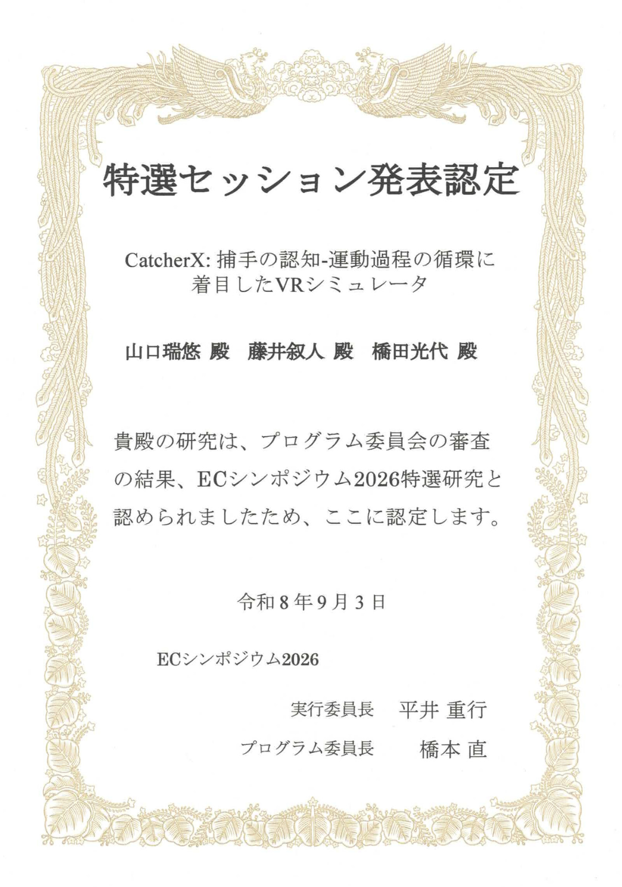

🏆 特選セッション発表認定
査読付き口頭発表として採択された研究におくられる，口頭発表に関するプログラム委員推薦賞です．
特選セッション発表認定・レコメンデモ認定
認定年月： 2026年9月
認定対象： CatcherX: 捕手の認知-運動過程の循環に着目したVRシミュレータ
著者： 山口 瑞悠，藤井 叙人，橋田 光代（福知山公立大学）
主催： 情報処理学会 エンタテインメントコンピューティング研究会
京都産業大学で開催されたエンタテインメントコンピューティング2026（EC2026）において，CatcherXの研究発表が2件の発表認定を受けました．
査読付き口頭発表として採択された研究におくられる，口頭発表に関するプログラム委員推薦賞です．
専門家推薦に基づき，デモ・ポスター発表の中から優れた研究発表におくられる専門委員推薦賞です．

口頭発表とデモ・ポスター発表の双方を評価いただけたことを励みに，今後もCatcherXの研究開発を進めていきます．